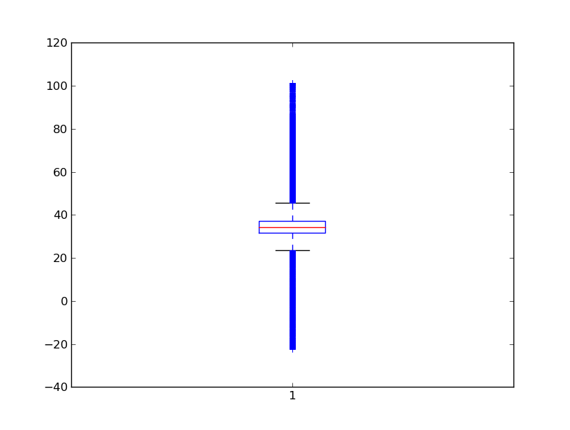
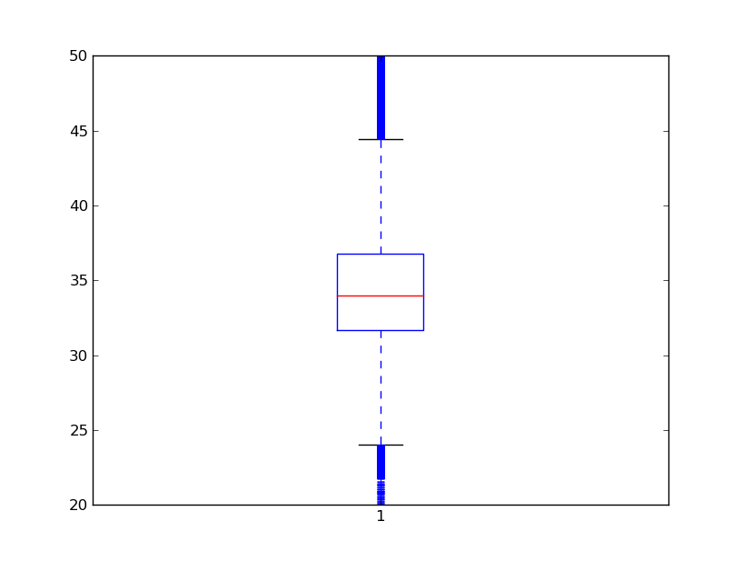
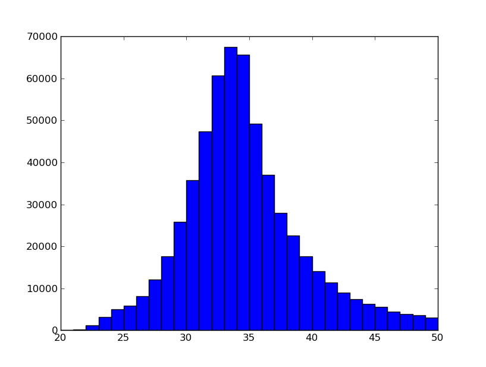
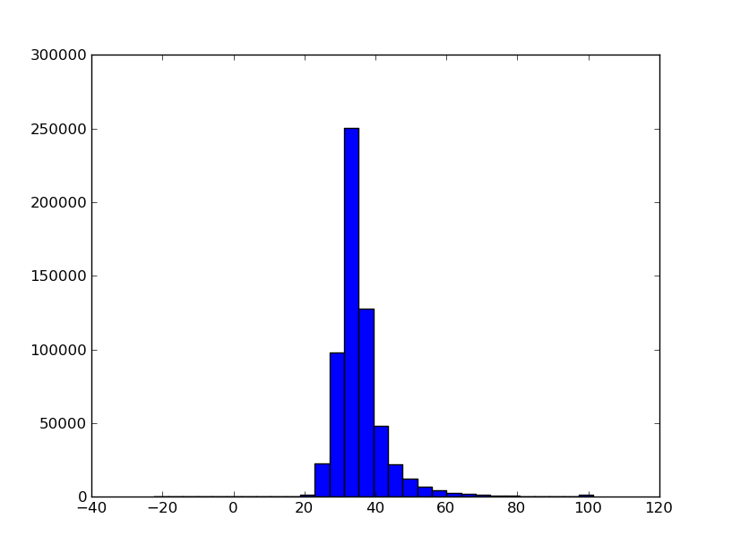

The first physiological feature. First some facts:
Type: Continous • Min: -22.48 • Max: 101.35 • Mean: 35.45 • Std: 7.48
First thing I notice, is that the feature have some values less than zero. 713 values less than zero, to be precise. Maybe outliers? First a boxplot of all rows of P1
And here is the boxplot of the range 20 to 50
Here is a histogram of all values between 20 and 50
This isn’t showing the whole range of P1. 578727 out of 604329 rows have P1 between 20 and 50. That is 95.8%. A histogram of the whole range is given here
